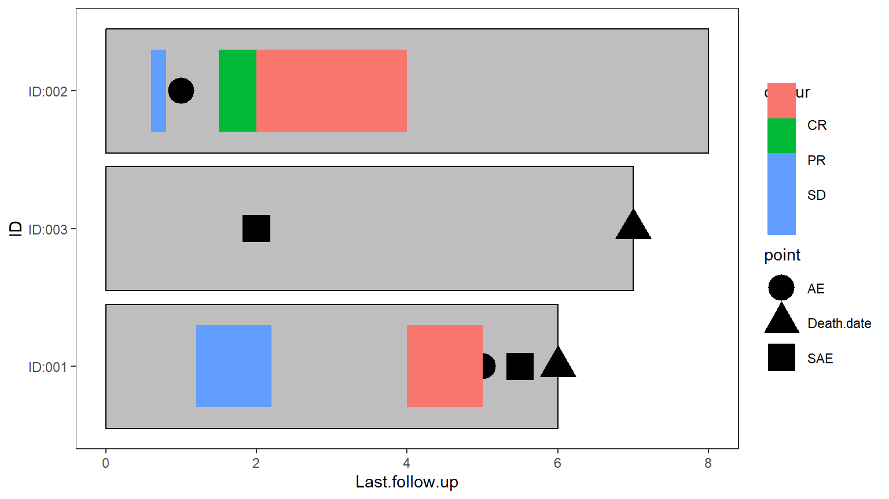

6 When there are multiple column per event type
When there are separate columns for the data, and event type it is more complex. In this data the response start, end, and response types are all stored in different columns, but must be kept together per patient and event.
long_start <- gather_(data=wide_example[,c('ID','Response1.Start','Response2.Start','Response3.Start')],
"response_number", "start_time", gather_cols=c('Response1.Start','Response2.Start',
'Response3.Start'),na.rm=T)
long_start$response_number <- substring(long_start$response_number,1,9) # Will be used to match to the end and types| ID | response_number | start_time |
|---|---|---|
| ID:001 | Response1 | 1.2 |
| ID:002 | Response1 | 0.6 |
| ID:001 | Response2 | 4.0 |
| ID:002 | Response2 | 1.5 |
| ID:002 | Response3 | 2.0 |
Separate dataframes are created for the end time, and response, then they are all merged together by the id, and response_number
long_end <- gather_(data=wide_example[,c('ID','Response1.End','Response2.End','Response3.End')],
"response_number", "end_time", gather_cols=c('Response1.End','Response2.End',
'Response3.End'),na.rm=T)
long_end$response_number <- substring(long_end$response_number,1,9)
long_response <- gather_(data=wide_example[,c('ID','Response1','Response2','Response3')],
"response_number", "Response", gather_cols=c('Response1','Response2','Response3'),
na.rm=T)
long_response_full <- Reduce(function(...) merge(..., all=TRUE,by=c('ID','response_number')),
list(long_start, long_end, long_response))| ID | response_number | start_time | end_time | Response |
|---|---|---|---|---|
| ID:001 | Response1 | 1.2 | 2.2 | SD |
| ID:001 | Response2 | 4.0 | 5.0 | CR |
| ID:002 | Response1 | 0.6 | 0.8 | SD |
| ID:002 | Response2 | 1.5 | 2.0 | PR |
| ID:002 | Response3 | 2.0 | 4.0 | CR |
The lines can then be added to the plot
plot+
swimmer_points(df=points_long,id='ID',name_shape = 'point',size=8)+
swimmer_lines(df_lines = long_response_full,id='ID',start = 'start_time',end='end_time',
name_col='Response',size=25)